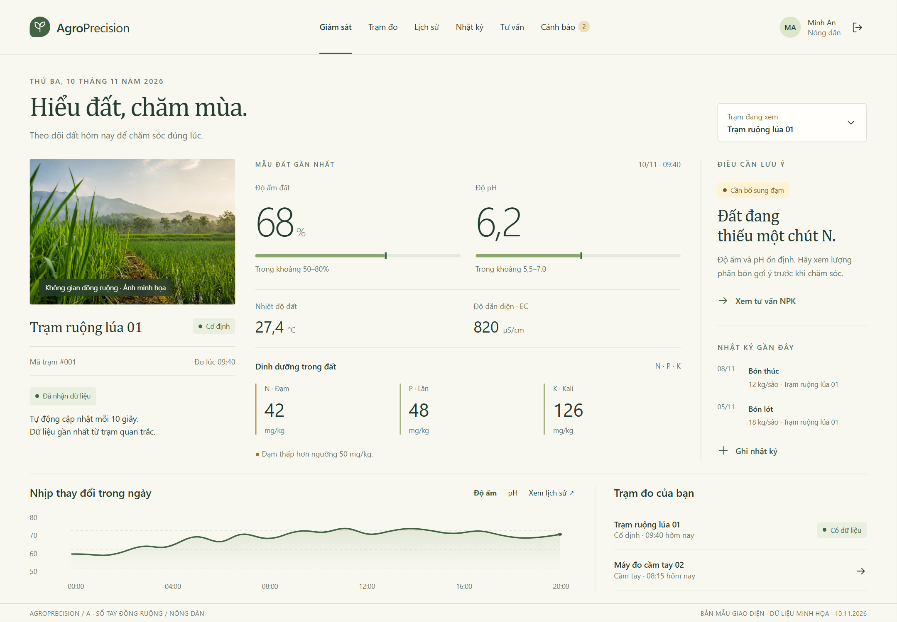
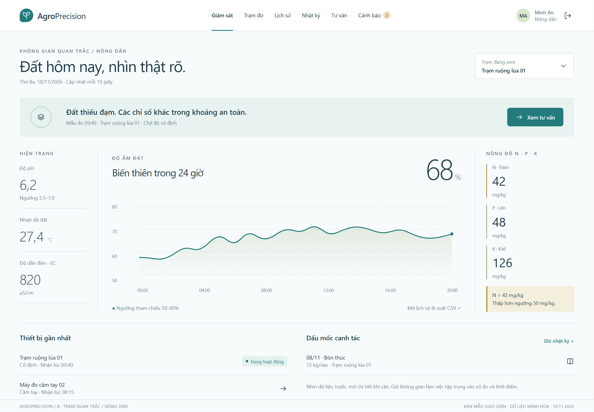
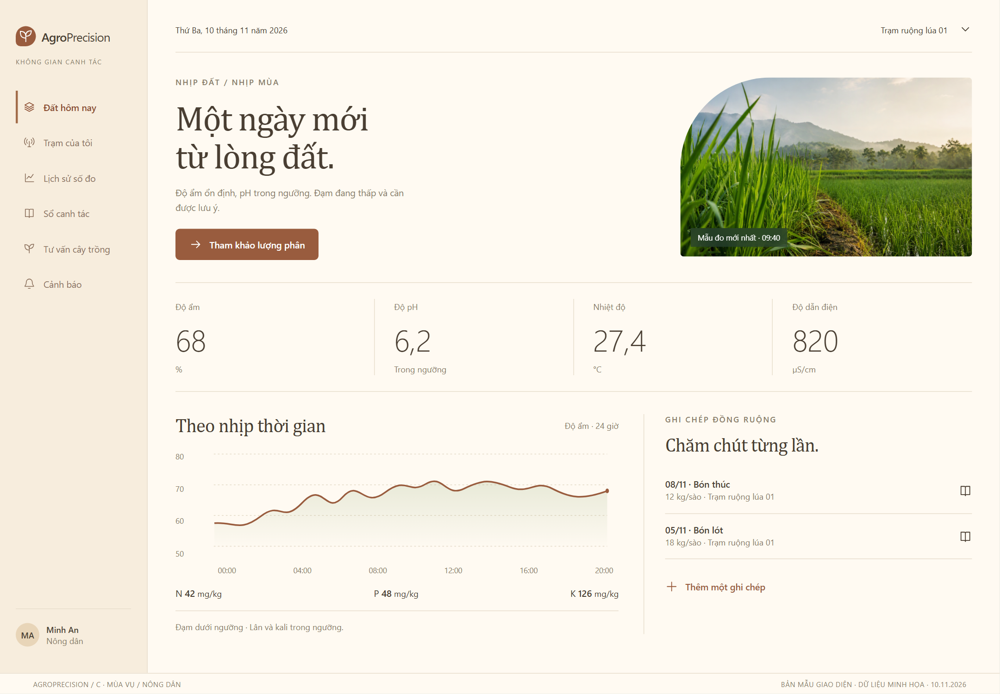

A / Sổ tay đồng ruộng
Nền giấy sáng, xanh lá trầm, kiểu chữ biên tập. Ảnh đồng ruộng, số đo và lời nhắc nằm trên ba nhịp khác nhau, không lặp lưới thẻ.
Gần gũi · Cân bằng · Có bản sắc
Các mẫu được xây dựng từ tài liệu phân tích thiết kế và tính năng hiện có. Không bê từng ca sử dụng thành một biểu mẫu; mỗi màn hình có bố cục riêng theo công việc: theo dõi, đối chiếu, ghi chép hoặc vận hành.
Chữ tiếng Việt được dựng bằng font thật rồi chụp thành PNG. Toàn bộ tên, số đo, cảnh báo và kết quả tư vấn trong ảnh là dữ liệu minh họa.
Nền giấy sáng, xanh lá trầm, kiểu chữ biên tập. Ảnh đồng ruộng, số đo và lời nhắc nằm trên ba nhịp khác nhau, không lặp lưới thẻ.

Nền trắng lạnh, xanh ngọc, chữ không chân. Biểu đồ là trung tâm; số đo và ngưỡng đặt hai bên để đọc nhanh, không dùng ảnh trang trí.

Nền ngà, màu đất nung, điều hướng bên trái. Ảnh và tiêu đề thoáng ở đầu; dải chỉ số nằm ngang, nhật ký gắn cùng nhịp mùa vụ.
Giám sát 7 chỉ số đất và đánh giá nhanh; trạm cố định/cầm tay; lịch sử và CSV; nhật ký; cảnh báo; tư vấn NPK và cây trồng. Chỉ hiển thị trạm thuộc phạm vi tài khoản.
Tổng quan toàn hệ thống; quản lý trạm và khóa API; ngưỡng cảnh báo; người dùng, khóa tài khoản và phân quyền; hệ số nông học. Các chức năng dữ liệu dùng chung nằm trong không gian quản trị.
Bạn có thể chọn toàn bộ A, B hoặc C, hoặc nêu rõ phần muốn phối hợp — ví dụ bố cục A với bảng màu B. Sau khi duyệt, giao diện mới sẽ được triển khai và kiểm tra lại tiếng Việt, font, phân quyền và bố cục ở các kích thước màn hình.
Nguồn nghiệp vụ: PhanTich_ThietKe.docx, các thành phần frontend và tuyến API hiện có trong dự án. Font: Segoe UI cho giao diện, Cambria cho tiêu đề biên tập. Không dùng chữ do mô hình tạo ảnh vẽ ra.
Ảnh ruộng lúa được tạo riêng làm tư liệu minh họa, không phải ảnh thực địa của trạm. Prompt đã dùng: “A sophisticated editorial photograph of a lush Vietnamese rice field, fresh green rice blades in the foreground, muddy earthen field edge, repeated rice rows leading toward a quiet tree line and low hills, misty pale warm morning sky. Natural humid daylight, calm and luminous, authentic agricultural textures, deep olive greens and subtle straw tones. No people, machinery, devices, text, logos or interface elements.”